Home / Featured Cases /KST Power Oil Equipment International B2B Website
B2B Export Site Design and Development of the Independent Station for Foreign Trade
KST Oilfield — Global Website for Oilfield & Power Equipment
A foreign trade demonstration station for oil equipment for KST POWER: the hard parameters of three product lines for drilling rigs, industrial engines and generators are loaded into model pages that can be picked up by search engines, in Chinese, Russian, real-time search, full-station structured data for global buyers.
Independent international B2B website · Design and development
Role
Global · Chinese/English/Russian
Markets
B2B Showcase · Web
Type
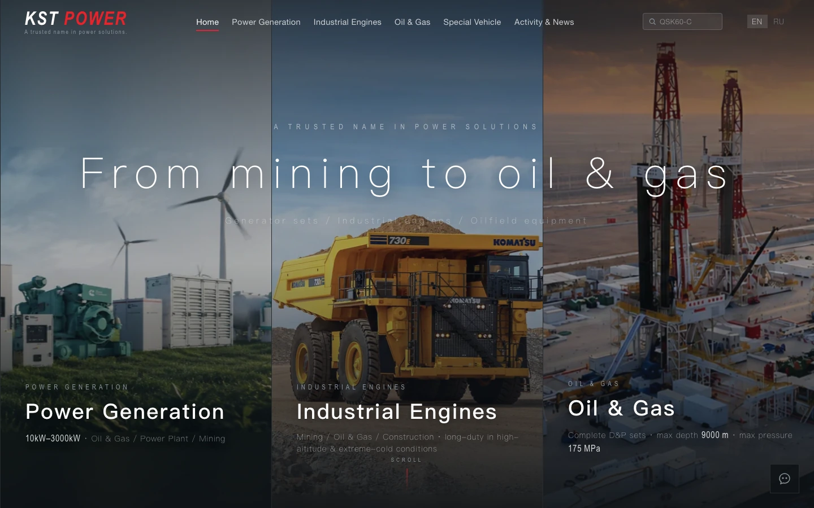
Project Overview · Overview
KST POWER (Guangzhou Sontte Machine / KST Group) is a supplier of oil drilling, mines and power equipment exports, supplying overseas buyers with rigs, industrial engines and generator units. Its pains are typical: the product is hard equipment for the heavy industry, and the overseas purchaser sees only "model + parameters" before the next list, and can + mail be accessed" rather than the effect of a flower whistle. The original display spreads, the parameters are not visible to non-Chinese buyers, and the search engine does not capture key information.
We'll recreate it as a static, little dependent, completely captured by the search engine.International B2B WebsiteThe three product lines are separate pages, each model enters the parameter table and carries a real-time search; in English the main, Chinese-Russian interconnectivity switch; contact, mailto, structured data are all static rendering, ensuring that reptiles and social cards that do not run JS can read. kst-power.com, double-channel deployment (GitHub Pages + own server nginx).
Oilfield drilling and production equipmentIndustrial enginesGenerator setModel Parameter TableModel Real-Time SearchChinese-English-Russian trilingualschema.org SEO
Our work.
01Information architecture: three product line break pages + classification / branding Tab
02Model Table of Parameters + Real-time search for each table (filtered by model)
03C/ E / R Intra-Strading Structures and Local Memory
04SEO: schema.org Structured Data + OG / Twitter Card
06Single data source builder tool (contact / public information) + double-channel deployment
Screens · Interface display
See what this station does one by one
All of which is a live high-resolution screenshot on the kst-power.com line, clicks on each cell detail of a table of model parameters that can be viewed on full screen.
The heavy industry buyers are not patient enough to read the presentation, and the first screen must answer "What are you offering?" We'll make the front page.Split Screen Hero Zone— generator sets, industrial engines, oil rigging equipment, one large map per screen and direct hard indicator (power generation) 10kW–3000kW, Drilling depth 9000m, Pressure 175MPa). Down below is theFive application scenariosJutu (oil field / gas / well drilling / mine / electricity) and a row of "no adjectives in numbers" capacity indicators to build selected confidence on the first screen.
· Generator set / Industrial engine / Oil field drilling equipment, each with a solid picture and hard indicator
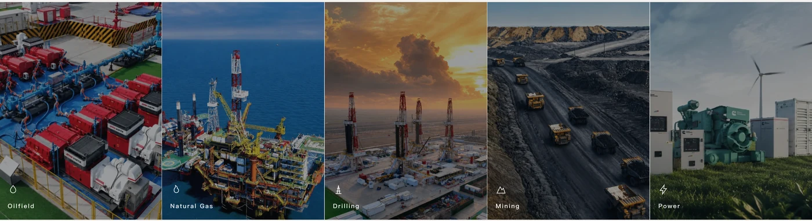
Five-Appliced Fields / Gas / Drilling / Mines / Electricity
• Field drilling equipment · Parameter table + Model real-time search + In-situ Quest
It's a core business issue for the whole station: oil drilling equipment.Model and ParametersDeal, the buyer wants a specs page that matches quickly and is caught in a search engine, not a chart.Drilling Rig/Workover/Cementing/FracturingFour major categories, each with an independent Tab; model of each seriesParameter Matrix- Like SYL2500Q to SYL8000Q power, charge, work pressure, whole weight of the machine, by type.Live Model Search Box, the buyer enters the model for instant filtering; under the table isOnsite Inquiry Entrance, see the appropriate model initiates the contact on the spot, without jumping.
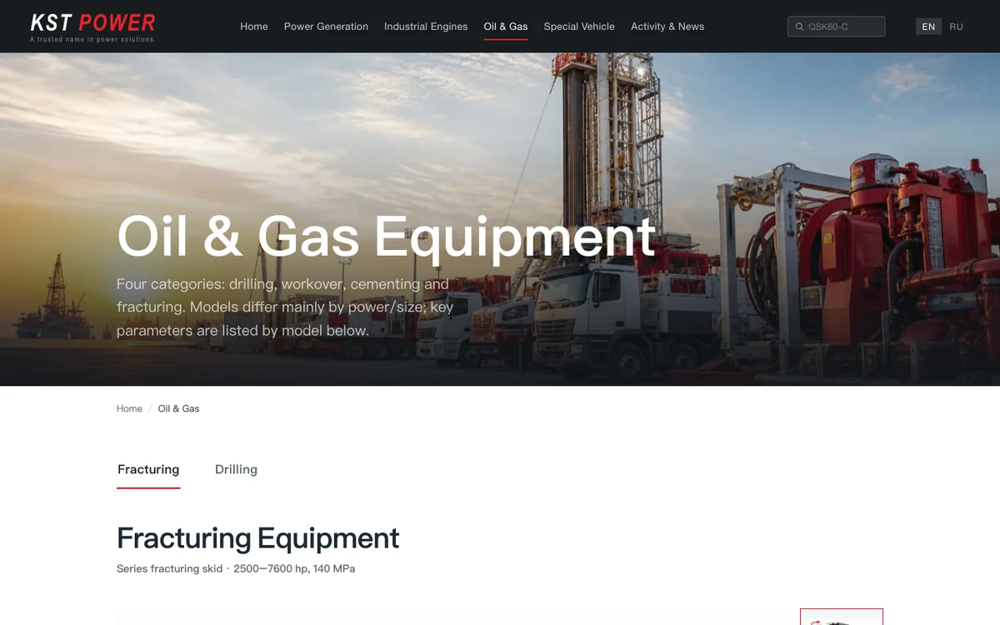
Oilfield drilling equipment • Large master map + rig / well repair / well-fixing / Breathing four major items, Tab
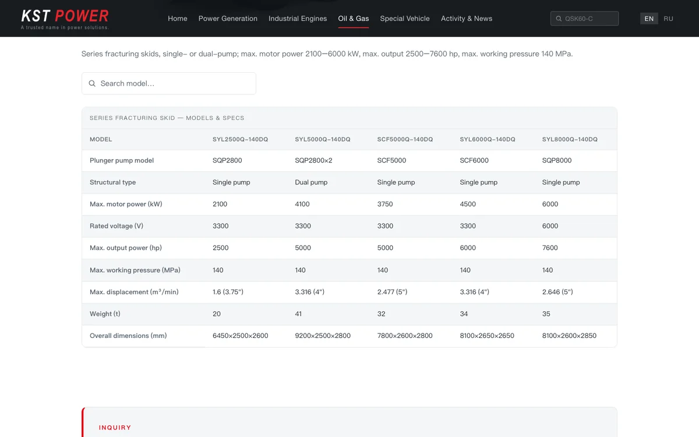
Fracking device parameter matrix · Electric Power / Flow / Pressure Trail + Real-time Search + Inquiries
• Industrial engine · 25+ machine + appliance
The industrial engine page deals with mining cards, diggers, loaders, rigs and oil and gas drilling.Cummins Model Gallery(QSK series live-action carousel), the lower part isMining Engine Specification SheetModel, charge (3.8–95 L), power (74–4400hp), twist, plus a column"OEM supporting equipment/adapted models"– Just tell the buyer what the engine can get into Beras, Pine, Carter, Liberhal and finish the "selection" and "can I use this machine?" Same type search.
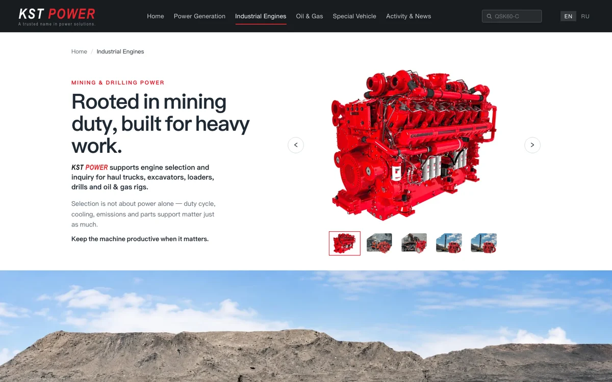
Industrial engine, Cominth mine and rig-type gallery.
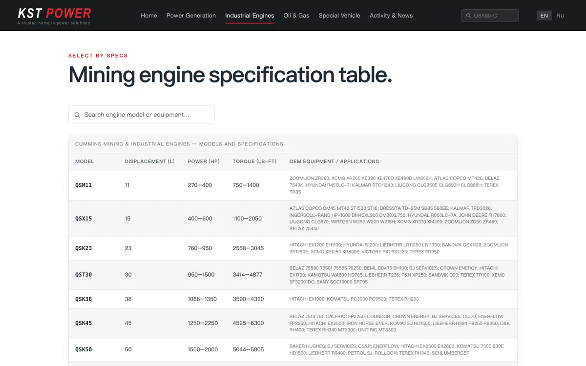
Mining engine specification table . Model / Flow / Power / Twirling / OEM Package + Search
• The selected logic of placing Tab by brand.
Generators are often branded first, then power. So this page is pressed.Cummins/Caterpillar/BaudouinSubbrands Tab Division, each of which is completeUnit Specification Sheet—group type, auxiliary engine type, primary / back-up power (kVA and kW columns), over 10kW to 3000kWThe parameters are the same as the official calibration and the professional buyer can be trusted.
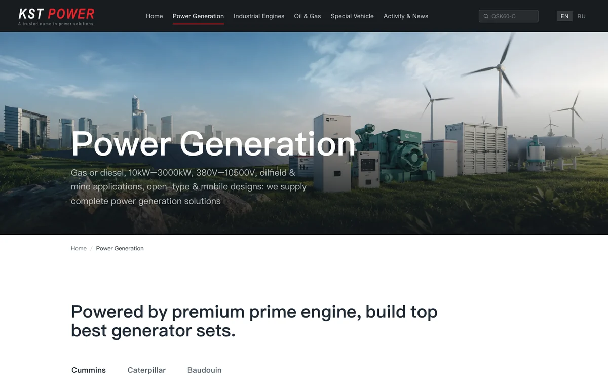
Generator team . Commins / Caterpillar / Boduan brand Tab
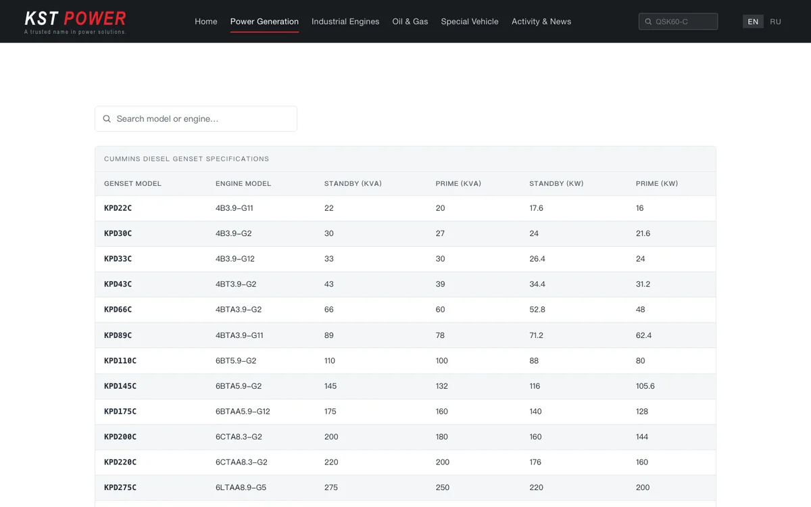
Konmins diesel fleet specifications . Team / support engine / main back-up kVA kW
05 · Three words · After-sales · Company endorsement
Language is a threshold and a sign of trust for global buyers. All stations.Chinese-English-Russian, the translation (consisting of navigation, body text, description of parameters) is linked to the same page, press localStorage Memory preferences, toggle zero jumps — the Russian-language view of the same engine page is illustrated by the following figure.After-sales service page"Selection proposal / offer delivery / spare parts supply / bilingual support" is used in four words to answer the "what happens when you buy it" most of the concerns of overseas procurement.About PageCredibility is built in the context of the KST Group (establishment 2005), in partnership with Caterpillar, SJPETRO, Belas, Combins, Baudouan, etc.
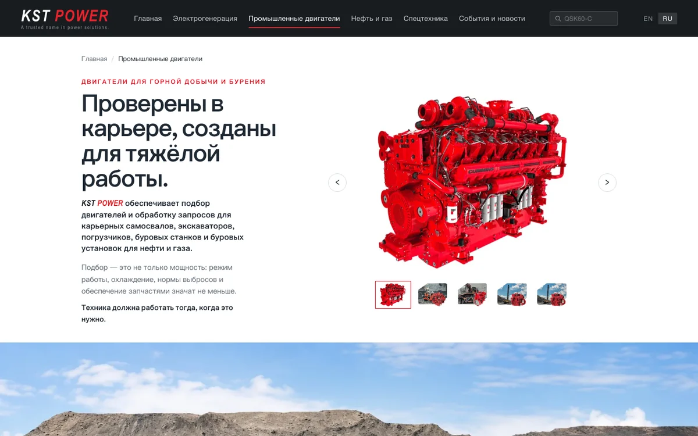
Russian view of the same engine page . C / E / Russian interconnectivity, local memory preferences
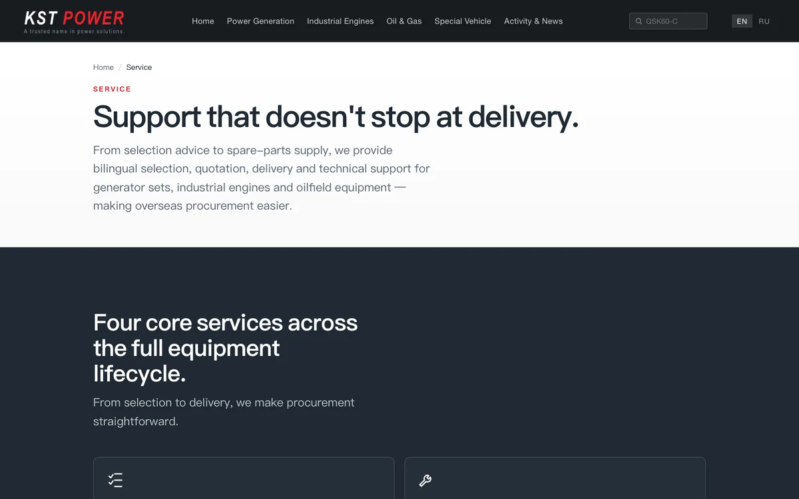
• Covering four core services for the full cycle of equipment and reducing overseas procurement concerns
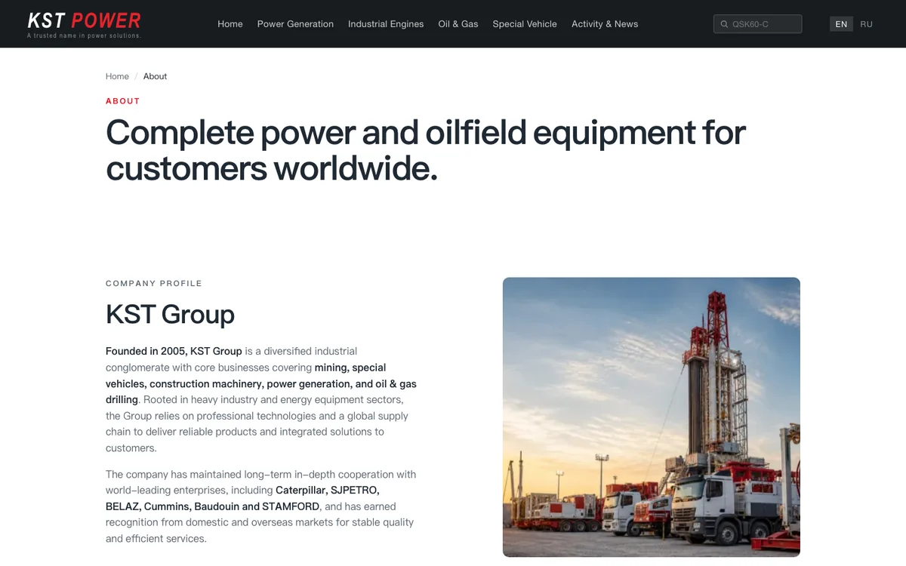
On the endorsement of the KST Group (establishment 2005) background and cooperation brand
Invisible but equally critical level: Station-wideStatic rendering, all contact mailboxes, mailto, schema.org structured data are written in HTML to ensure that reptiles, Bing and social preview cards of JS are not executed and captured; webP response + LCP preload for performance; contact details and news useSingle data source build scriptOne change, full-station sync (including CI verification), lastDual Channel Deployment(GitHub Pages + own nginx server) This combination of "can be searched + can keep the Query + good maintenance" is the right one. International B2B WebsiteThe way it should be.
Are you also doing mechanical equipment export official website?
Oil, energy, medical, equipment manufacturing — a stand-alone international B2B website that requires parameters, was searched by Google and left behind for questioning, and we would like to talk.